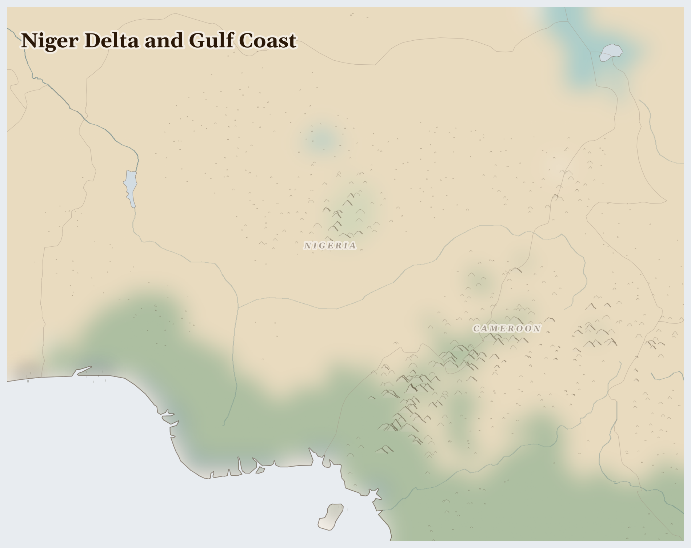

Niger Delta and Gulf Coast252M people
where Tertiary sediment subsides as oil is pumped and seasonal flood spreads wider across sinking ground
In the Niger Delta, the water is black. Not the dark brown of tannin-rich swamp water that the Ogoni and Ijaw have fished for centuries, but the iridescent black of crude oil — pooling in the creeks where women once harvested periwinkle and crab, coating the aerial roots of mangroves that served as nursery habitat for the entire Gulf of Guinea fishery. Shell has operated here since 1958.
Lives Lived Here
Before dawn in a creek village near Oloibiri — the site of Nigeria's first commercial oil well, drilled in 1956 — an Ijaw woman wades into the water to check her fish traps. The water has a sheen she has learned to ignore. Her mother caught enough fish to feed the family and sell the surplus at Yenagoa market; she catches less each year, and what she catches smells wrong. She smokes what she has over mangrove wood, as her grandmother did, but the mangrove forest is thinner now — oil kills the roots, and the women who cut wood for smoking have to go further each season. The smoked fish travels by canoe to the market at Yenagoa, where a trader buys it for resale in Port Harcourt.
In Benue State, six hours north, a Tiv farmer harvests yam from a mound he built by hand in March. His family has farmed this land for generations, rotating yam and cassava in a rhythm that keeps the soil alive. But the rains are shifting — too much in August, not enough in October — and Fulani herders are arriving earlier each year from the drying Sahel, their cattle eating what the farmer planted. The conflict is not ancient. It is new, and it is about water and grass and a climate that is pushing pastoralists south into land that settled farmers already work. His yam reaches Makurdi market. His wife controls the sale, as Tiv women have always controlled the food trade.
In Lagos, a young man from Kano pours concrete on a construction site in Victoria Island. He left the north after his father's farmland dried out — the Lake Chad basin has lost 90% of its surface water in fifty years. He sends money home by mobile transfer, minus the fees. His mother uses it to buy the millet she can no longer grow. He will not go back. There is nothing to go back to.
In a European refinery, Nigerian crude arrives by tanker — Bonny Light, prized for its low sulphur content. It becomes the petrol in your car, the plastic in your water bottle, the aviation fuel that carried you on holiday. The refinery does not know about the Ijaw woman's fish traps. The supply chain has no memory of what it costs at the source.
In Benue State, six hours north, a Tiv farmer harvests yam from a mound he built by hand in March. His family has farmed this land for generations, rotating yam and cassava in a rhythm that keeps the soil alive. But the rains are shifting — too much in August, not enough in October — and Fulani herders are arriving earlier each year from the drying Sahel, their cattle eating what the farmer planted. The conflict is not ancient. It is new, and it is about water and grass and a climate that is pushing pastoralists south into land that settled farmers already work. His yam reaches Makurdi market. His wife controls the sale, as Tiv women have always controlled the food trade.

Reference map. Country boundaries and features are approximate.
What Presses
The weight on Niger Delta and Gulf Coast
Ogoniland, Rivers State — In Ogoniland, population 850,000, Shell operated for decades without environmental controls. The 2011 UNEP assessment found hydrocarbons in drinking water at levels 900 times above WHO guidelines. Benzene — a known carcinogen — was detected in wells that families draw from daily. The mangroves that once filtered water and sheltered fish nurseries are dying from root contamination. Ken Saro-Wiwa and eight other Ogoni leaders were executed by the Nigerian state in 1995 for organising nonviolent resistance to Shell's operations. Thirty years later, the cleanup that UNEP estimated at $1 billion has received a fraction of that, and the contamination continues from ongoing spills on ageing infrastructure that Shell has been transferring to Nigerian companies with less capacity and less accountability.
Bauchi State, Northeast — On 1 March 2026, armed bandits attacked the community of Gwana in Alkaleri local government area, displacing 446 people from 73 households. This is not exceptional — it is the rhythm of life in the northeast, where communities face overlapping threats from bandits, Boko Haram remnants, and farmer-herder tensions. The IOM recorded it because someone reported it. Many attacks go unrecorded. Meanwhile, MSF concluded its three-year project in Cross River state in September 2025, leaving communities without the medical services that had partially filled the gap left by an underfunded public health system. When international organisations leave, the absence is felt in maternal deaths and untreated wounds — not in headlines.
The Middle Belt (Benue, Plateau, Nasarawa) — The Middle Belt is where the Sahel meets the Guinea savanna, and where climate change becomes a body count. Fulani herders, pushed south by desertification that has reduced Lake Chad to a tenth of its 1960s extent, arrive in farming communities where Tiv, Berom, and other groups have worked the land for generations. The conflict is not ethnic at its root — it is about water and grass and a landscape that can no longer support both livelihoods in the same space. But it becomes ethnic in the dying, because that is how people make sense of who is killing them. Plateau State's Jos area has seen repeated massacres. The Nigerian government has no resettlement policy and no climate adaptation strategy for pastoralists. The violence fills the vacuum.
Two streams flow outward from this bioregion — crude oil and cocoa beans — worth tens of billions at their destination. What does not come back is the water, poisoned by decades of spills; the air, darkened by gas flares that have burned continuously since the 1960s; the mangroves, dying from root contamination; and the childhoods, spent picking cocoa beans or breathing benzene. Nigeria exports its wealth and imports its food. The arithmetic is simple and it has not changed in seventy years. 2,619 killed (3 months); 30.3M food insecure (current); 4.5M displaced (total); crude oil, cocoa beans leaving; precipitation 2% of normal; 117 fires (7 days).
This Week
Nigeria: In September 2025, Médecins Sans Frontières (MSF) concluded our project in Cross River state, Nigeria, after three years of collaboration with the state ministry of health.
Nigeria: On 1 March 2026, armed bandit attacks occurred in the community of Gwana in Gwana/Mansur ward of Alkaleri local government area (LGA) of Bauchi State. According to key informants, the attacks displaced a total of 446 individuals from 73 households.
The gas flare does not know it is burning. It is doing what it was designed to do — disposing of what the market finds unprofitable to capture. The child breathing its output was not part of the design. No one drew her lungs into the engineering schematic. She is there anyway, and the flare burns on, and the distance between the boardroom that approved it and the bedroom where she coughs through the night is measured not in kilometres but in accountability.
For Prayer
For the 30.3 million people across Niger Delta and Gulf Coast who cannot meet their daily food needs. That supply routes hold, that harvests come, that aid reaches those cut off.
For the 4.5 million people displaced from their homes — especially in Nigeria, where the crisis is most acute. For safety on the road and welcome at the journey's end.
For communities enduring armed conflict between Boko Haram and Islamic State West Africa Province across Niger Delta and Gulf Coast — 3,000 killed in the past three months. This week in Nigeria: 17 March 2026 - Three suicide attacks were reported in Maiduguri, Borno State, Nigeria, on Monday 16 March, killing 23 people and injuring more than 100.. For protection of civilians and for those who have lost loved ones.
Especially for Nigeria, facing the most severe convergence of crises in this region. This week in Nigeria: The 'Country Guidance: Nigeria' represents Member States' joint assessment of the situation in the country of origin in relation to the applicable international and EU legislation on international protection.. For those making impossible decisions about whether to stay or flee, and for those who cannot choose.
For the helpers in Niger Delta and Gulf Coast — for their safety, their courage, and their capacity to reach those most in need.
For every act of resistance and care in Niger Delta and Gulf Coast — communities sharing food, farmers saving seed, neighbours sheltering neighbours. That these small acts of defiance outlast the crisis.
Out of the depths have I cried to you, O Lord; Lord, hear my voice; let your ears consider well the voice of my supplication.
Most merciful God, who by the death and resurrection of your Son Jesus Christ delivered and saved the world: grant that by faith in him who suffered on the cross we may triumph in the power of his victory; through Jesus Christ your Son our Lord, who is alive and reigns with you, in the unity of the Holy Spirit, one God, now and for ever.
Amen.
Seeds of Hope
The Movement for the Survival of the Ogoni People (MOSOP), founded by Ken Saro-Wiwa in 1990, organised 300,000 Ogoni in nonviolent protest against Shell's operations — the largest environmental justice mobilisation in African history. The Nigerian military government hanged Saro-Wiwa and eight colleagues in 1995. MOSOP still exists. The Ogoni still resist. In 2024, Ogoni communities continued to press for the implementation of the UNEP cleanup recommendations, fifteen years after they were published and barely begun.
For Reflection
What does it mean to pray 'give us this day our daily bread' alongside those who lack it?
What food in your pantry comes from the same global markets?
Looking Ahead
- The structural drivers in this bioregion are all trending in one direction.
- Shell's divestiture of onshore assets to Renaissance Africa Energy transfers environmental liabilities to a company with less capital, less technical capacity, and less international visibility — meaning less pressure to remediate.
- The farmer-herder crisis will intensify as the dry season extends under warming conditions, with no government policy to address pastoralist resettlement or climate-adapted land use.
- Nigeria's wet season flooding June-October -- the Niger and Benue rivers flood annually, displacing millions in the Middle Belt and exacerbating farmer-herder conflict
- Shell's Ogoniland cleanup milestones under the UNEP 2011 assessment -- fifteen years in, barely a fraction remediated; watch for HYPREP progress reports and community response
- OPEC+ Nigeria production quota decisions -- any increase intensifies gas flaring in the Delta; any decrease squeezes a government that depends on oil for 90% of export revenue
Carry This
What to bring with you from this briefing
Take Action
Organizations working at the nodes this briefing traces
Researches governance, livelihoods, and conflict in the Niger Delta. Publishes field-based studies on artisanal refining, pipeline surveillance economies, and how oil theft networks intersect with political patronage.
Documents the informal oil economy the briefing traces — how communities excluded from formal extraction build artisanal refineries, the health costs of crude oil processing in open pits, and how stolen crude enters international markets through ship-to-ship transfers in the Gulf of Guinea.
Nigerian environmental justice organization founded in 1993. Campaigns against gas flaring, oil spills, and land grabbing in the Niger Delta. Led the legal campaign that resulted in Shell's liability for Ogoniland contamination.
Works at the extraction nodes the briefing documents — communities in Ogoniland and Bayelsa State where decades of oil spills have destroyed fisheries and farmland, where gas flaring causes respiratory disease, and where compensation remains unpaid despite court orders.
Indigenous Ogoni organization continuing the legacy of Ken Saro-Wiwa. Advocates for environmental remediation, political self-determination, and community control over resource extraction on Ogoni land.
Represents the cost-bearers the briefing names — Ogoni fishing and farming communities whose land was devastated by Shell operations, who bear the health burden of hydrocarbon contamination in soil and groundwater, and who have yet to see meaningful cleanup despite the UNEP Ogoniland assessment.
Dutch research centre investigating corporate accountability in extractive industries. Tracks Nigerian crude oil supply chains from wellhead to European refineries, documenting tax avoidance, environmental damage, and human rights violations.
Traces the export pipeline the briefing follows — Nigerian crude flowing to Rotterdam refineries, LNG shipments to European terminals, and the corporate structures that shift profits away from communities bearing extraction costs in the Delta.
Nigerian environmental organization focused on ecological debt, food sovereignty, and climate justice. Campaigns against gas flaring, deforestation for plantation agriculture, and false climate solutions in the Gulf of Guinea region.
Connects the carbon and soil flows the briefing documents — how gas flaring in the Delta contributes more greenhouse emissions than the rest of West Africa combined, while plantation expansion into Cameroon's forest belt displaces smallholder farming communities.
Coalition campaigning for transparency in Nigeria's oil and gas revenue management. Tracks NNPC financial flows, production-sharing contracts, and the gap between extraction revenues and community development spending.
Follows the money the briefing traces — how petroleum revenues extracted from Delta communities flow through opaque state channels, how production-sharing agreements favor international oil companies, and why host communities receive a fraction of the wealth generated beneath their land.
Generated 2026-03-18